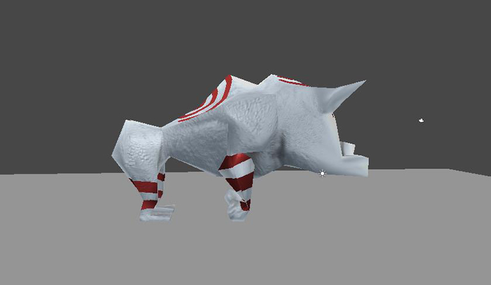
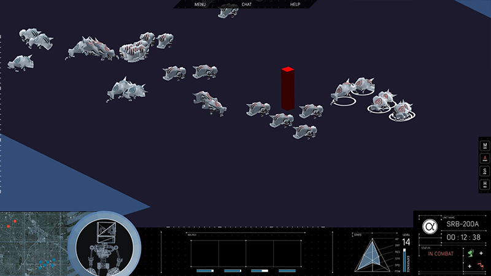
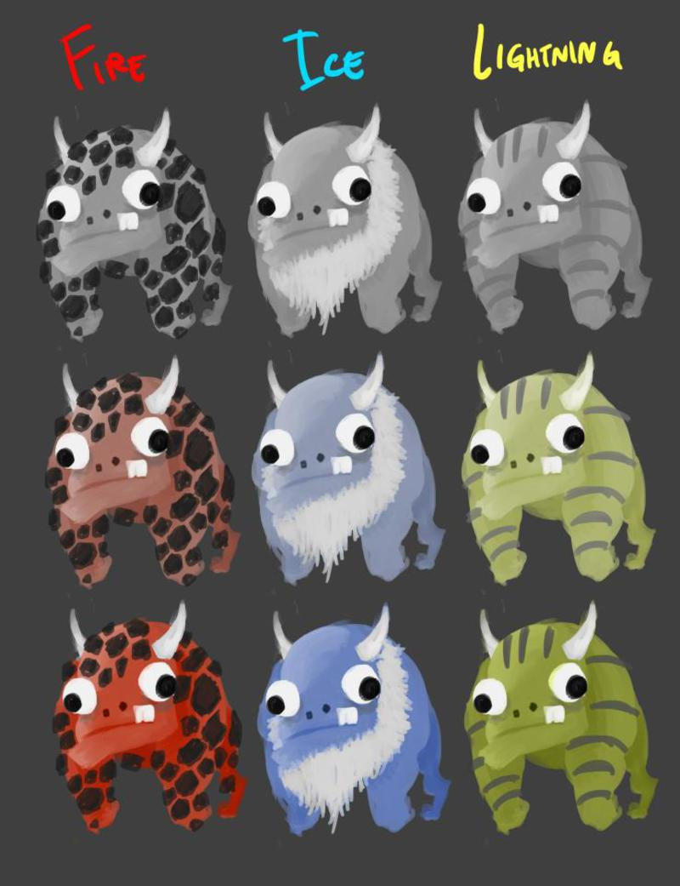
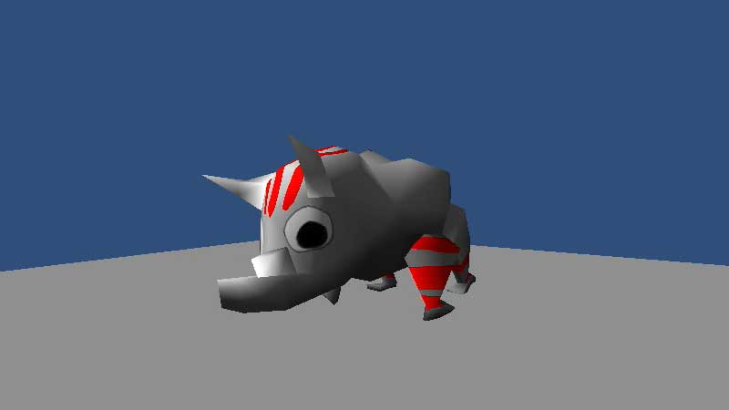
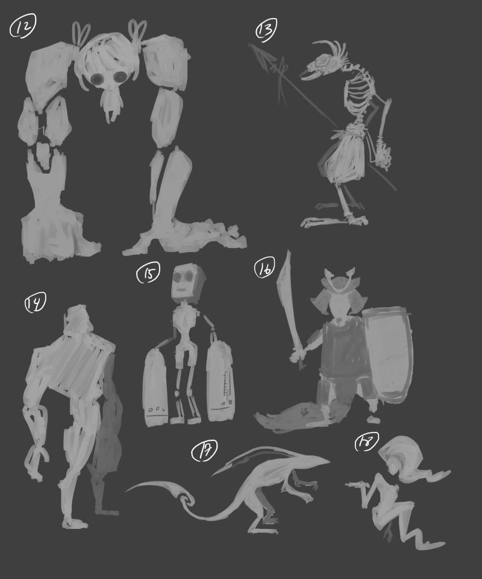
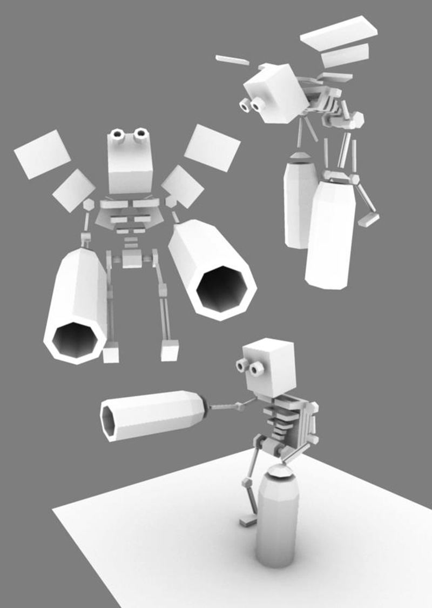

Project Alpha is an RTS game built with the Unity game engine. The concept behind the game is to add a new twist to the traditional RTS gaming formula by injecting features from newer genres such as MOBA games. The video below showcases how far we are in the development process. However, due to the speed at which we are working, the video is lacking certain features that have since been added.
Lockstep networking: We implemented our own version of a lockstep protocol in order to handle large numbers of units and multiplayer without noticeable delay
Characters: We have almost finished modeling our standard "creep" / "grunt" units. Our hero unit is in development too. Once both are complete, we will have a consistent pipeline for creation and the rest of our models should be produced more efficiently.
Below is an interactive turntable of the first grunt unit we have created: the Gorilla Yeti. Click and drag on top of the image to rotate.
The model is very light, consisting of only around 300 triangles. Most of the detail was added on via a very high-poly sculpt in Z-Brush which was then baked onto the original model (note that in the above turntable, only about half of the model has the detailed texture applied so far).
Inside the game, the normal map is applied from the high poly model, so the character can be lit dynamically. There is also a shader applied to it that simulates rim lighting.
User Interface: The image below is our game's UI. The camera angle and movement mimics that of the standard RTS formula and it is what the player will use to navigate the map.
Here are a few pieces of concept art that showcase the whimsical nature of our game.
   {kind=link}